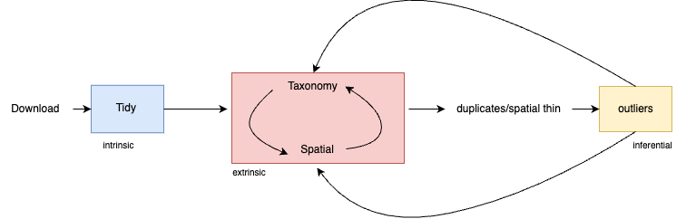

# new diagram here
library(DiagrammeR)1 Introduction
“Garbage in, garbage out” - George Fuechsel, IBM computer programmer
The idea that using flawed or nonsensical data as input produces output of similar quality is one that is well known in many scientific disciplines. In ecology and biodiversity research, however, scientists are often at risk of unintentionally using flawed or nonsensical data because they must bring together lots of data from many sources to address their research questions. These data are rarely easy to combine. Data from different sources vary widely in their structure and quality. As a result, collating them into something usable to answer a research question can be challenging.
Data cleaning, the process of identifying and fixing incorrect or doubtful data, is an essential step in ecology and biodiversity research. Data cleaning improves data quality and the validity of scientific findings (Rodrigues et al., 2022).
This book will guide you through how to acquire and clean open access biodiversity data in R. We will be working with point-based species occurrence data from online infrastructures such as Global Biodiversity Information Facility (GBIF) and the Atlas of Living Australia (ALA). We will be working with the R package galah for accessing biodiversity data. If you have occurrence data you have personally collected, some parts of this book may still be relevant.
We have included code blocks throughout this block to show you how to execute a particular task. We will point out at the beginning of the code block of any R packages that are needed for data cleaning or visualising.
1.1 What you will learn / Outline of the book
To begin working with open access data we’ll teach you how to:
Narrow your data scope
Import data
Tidy and familiarise yourself with meta-data
Once data have been imported and formatted correctly we’ll dive into the major cleaning steps. We will focus on how to deal with taxonomic and spatial issues with biodiversity data.
- We will start with taxonomic issues
- Taxonomic issues
- naming authorities
- synonyms
- Duplicates
- Spatial data
- Outliers
- Duplicates
- Taxonomic issues
1.2 What you won’t learn
There are many important subject areas that this book will not cover. We won’t be teaching you:
- How to clean other data types e.g. environmental or trait data
- How to run a species distribution model
- Hypothesis testing or experimental design
1.3 Prerequisites
1.3.1 User accounts
To get data out of data infrastructures such as the Atlas of living Australia (ALA) or the Global Biodiversity Information (GBIF) you’ll need to first create an account. You’ll want to sign up for an account with the relevant data infrastructre, this book will use ALA and GBIF data as examples.
Atlas of Living Australia = create an account Global Biodiversity Information Facility = create an account
1.3.2 R
Download R from CRAN (the comprehensive R archive network), for your operating system, and install it on your device. Major updates for R come out yearly with a few minor releases throughout the year, so make sure to update semi regularly.
Windows
Mac
1.3.3 RStudio
Rstudio is an integrated development environment (IDE) for R programming. Download and install Rstudio for your operating system https://posit.co/download/rstudio-desktop/
Windows
Mac
1.4 How to use this book
There is no one size fits all workflow, not all steps are relevant and/or possible. Through examining the literature we found steps were frequently done in completely different orders depending on the nature of the study and the area of expertise possessed. Because of this, we don’t recommend you use this book in a linear fashion. However some steps logically come first, you might need to go back to them after completely another (fig x) 